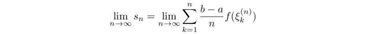
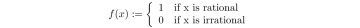
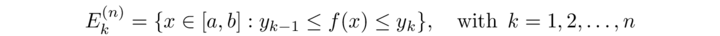
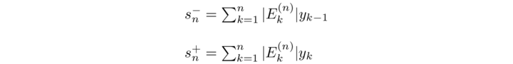

Integrale di Lebesgue - Motivazione
A partire dagli inizi del XX secolo la teoria classica dell'integrazione, di Riemann, è stata sostanzialmente sostituita da una nuova teora, dovuta a Lebesgue, estremamente più generale, flessibile e potente, che ha rivoluzionato l'analisi matematica. Vediamo molto sinteticamente alcune questioni rispetto alle quali l'integrale di Riemann è inadeguato ed è auspicabile avere un convetto diverso di integrale.
Vorremmo che lo spazio (vettoriale) delle funzioni integrabili su unb certo dominio, munito della norma dell'integrale, fosse uno spazio di Banach (cioè fosse completo), cosa che non accade con l'integrale di Riemann. Ma questo coinvolge l'integrazione di sucecssioni di funzioni, quindi
Vorremmo un concetto di integrale con cui l'integrazione di successioni e serie di funzioni obbedisca a regole semplici, cioè si possa dimostrare che lo scambio tra limite e integrale è lecito sotto ipotesi piuttosto generali e di facile verifica. (Nella teoria di Riemann l'unico criterio semplice di integrazione per successioni richiede la convergenza uniforme, che è un'ipotesi piuttosto forte.)
Vorremmo un concetto di integrale in cui l'insieme delle funzioni integrabili sia "stabile" rispetto a un gran numero di operazioni, in particolare rispetto al passaggio al limite di successione. (Per l'integrale di Riemann, invece, una successioni di funzioni integrabili può convergere a un limite non integrabile). Questo significherà anche che dobranno essere integrabili anche funzioni "molto discontinue".
Vorremmo un concetto di intergarle in cui la possibilità che la funzione integranda sia illimitata e/o che l'insieme di integrazione sia illimitato costituisca la regola e non l'eccezione (come è nella teoria di Riemannm, in cui l'integrale viene "generalizzato" solo in un secondo momento per includere queste situazioni):
Vorremmo un concetto di integrale in uci, sia in una variabile che in più variabili, l'insieme di integrazione possa essere di tipo molto generale, anhe molto irregolare.
Ottenere un integrale con proprietà migliori significa ovviamente cambiare la definizione di integrale, e più precisamente cambiarlo in un senso che renda meno restrittiva la richiesta di integrabilità. Ricordiamo come è stato definito l'integrale di Riemann come limite di somme:
dove al passo n-esimo l'intervallo [a,b] è stato suddiviso in n intervalli uguali mediante i punti a= x0(n), x1(n), x2(n), xn(n), = b e ad ogni passo si sono scelti, arbitrariamente, gli n punti ξk(n) ∈ [xk-1(n),xk(n)], k=1, 2, ...,n. La funzione f si dice Riemann-integrabile se il limite esiste finito e non dipende da come si sono scelti, ad ogni passi, i punti ξk(n). Si capisce dalla definizione che ciò che "mette a rischiO" l'integrabilità è il fatto che f abbia numerosi punti di discontinuità, e quindi nel corso della costruzione succeda "tante volte" che scegliendo il punto ξk(n) in modi diversi all'interno dell'intervallino [xk-1(n),xk(n)], si ottengano delle variazioni importanti nel valore di sn. Ad esempio, la funzione di Dirichlet
non è integrabile secondo Riemann perchè, ad ogni passi della costruzione iterativa, è possibile scegliere i punti ξk(n) tutti razionali e allora sn = 1, o tutti irrazionali, e allora sn = 0; perciò certamente successioni di Cauchy-Riemman diverse hanno limiti diversi.
Se vogliamo dare una definizione di integrale diversa, che risulti meno restrittiva, dobbiamo trovare il modo di netralizzare, nell'algoritmo di calcolo dell'integrale, gli effetti di instabilità dovuti alle (eventuali) grandi oscillazioni o discontinuità della funzione.
Un'idea di questo tipo si trova nella nozione di integrale introdotta da Henri Lebesgue nel 1902. L'idea, apparentemente banale, è; invece di fare una costruzione iterativa suddividendo l'intervallo [a,b] sull'asse x in parti uguali, facciamo una costruzione iterativa suddividendo in parti uguali, sull'asse y, un intervallo che contenga l'insieme dei valori assunti dalla funzione (che per il momento supponiamo limitata). Ad esempio, se la funzione ha valori in [0,1], al passo n-esimo suddivideremo [0,1] in parti uguali e considereremo gli insiemi
Ovviamente un'approssimazione, per difetto o per eccesso, dellíarea sotto il grafico di f si ottiene, rispettivamente, con le somme:
dove |Ek| indica la misura dell'insieme Ek, cioè ad esempio è un intervallo la sua lunghezza, se è l'unione di più intervalli la somma delle lunghezze degli intervalli e così via.